Opening the black box
Explainable AI (xAI) in the life sciences
Ivan Cucchi1 & Marcin Kierczak2
1 Sweden AI Factory / Stockholm University
2 NBIS / SciLifeLab
25 November 2026
Would you trust a model that is right 95% of the time…
…if you didn’t know why?
Clever Hans, 1907
A horse that could count.
It read the questioner’s body language.
Right answers — wrong reasons.
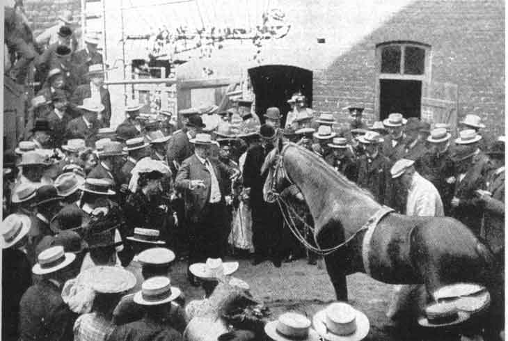
Hans and Wilhelm von Osten, 1904. Photo: Karl Krall, public domain (Wikimedia Commons).
Investigated by psychologist Oskar Pfungst (1907). The ML term “Clever Hans predictor”: Lapuschkin et al. (2019)
Today
What is xAI?
Every number is visible. None of them is an explanation.
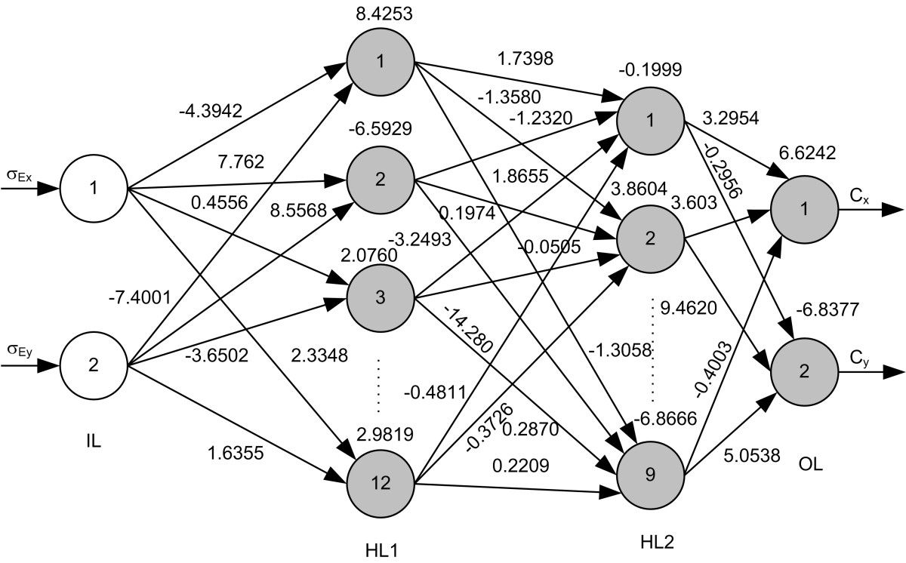
Network diagram: Arockia et al., J Wireless Commun Netw 2014:160 (as used in Kierczak (2019))
Interpretable vs explainable
Interpretable
How does the model work?
The model is the explanation
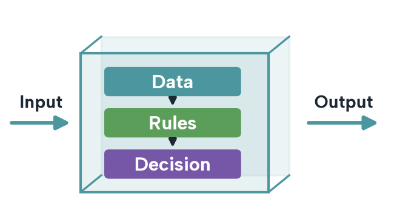
linear models · small trees · GAMs · rule sets
Explainable
Why did it produce this output?
A second model explains the first
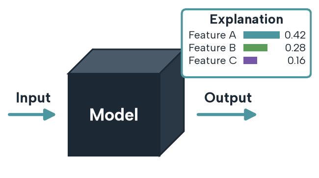
SHAP · LIME · saliency · Grad-CAM · attention
Is there an accuracy–interpretability trade-off?
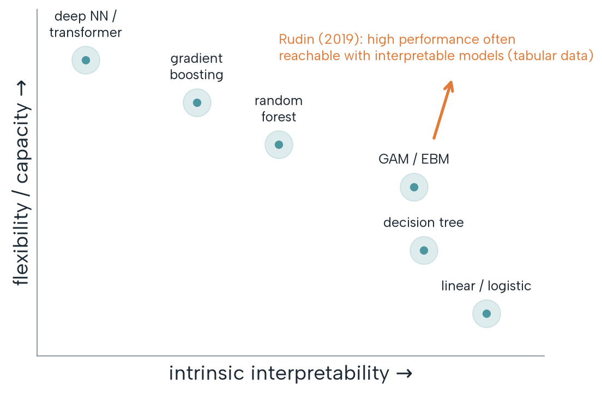
Conceptual sketch, not data. Against a necessary trade-off on structured data: Rudin (2019); interpretable GA2M in healthcare: Caruana et al. (2015)
A short history
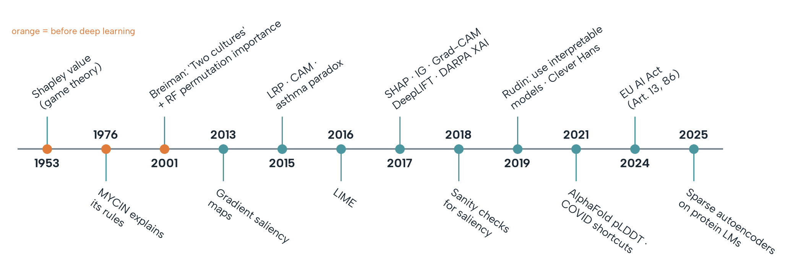
Shapley (1953); Buchanan and Shortliffe (1984); Breiman (2001); Simonyan et al. (2014); Bach et al. (2015); Zhou et al. (2016); Caruana et al. (2015); Ribeiro et al. (2016); Lundberg and Lee (2017); Sundararajan et al. (2017); Selvaraju et al. (2017); Shrikumar et al. (2017); Gunning and Aha (2019); Adebayo et al. (2018); Rudin (2019); Jumper et al. (2021); DeGrave et al. (2021); European Parliament and Council of the European Union (2024); Simon and Zou (2025); Adams et al. (2025)
Three questions to place any method
| Scope | local — this patient LIME · Integrated Gradients · SHAP · Grad-CAM · attention maps |
global — the whole model sparse autoencoders · SHAP (averaged) |
| Timing | intrinsic — by design GAM · linear models |
post hoc — after training LIME · SHAP · Integrated Gradients · sparse autoencoders · Grad-CAM · attention maps |
| Access | model-specific — needs gradients / trees Integrated Gradients · sparse autoencoders · TreeSHAP · Grad-CAM (CNNs) · attention maps (transformers) |
model-agnostic — inputs → outputs only LIME · SHAP (Kernel version) |
Three families of post hoc methods
Perturb the input
model-agnostic
permutation importance · LIME · SHAP · occlusion · in-silico mutagenesis · counterfactuals
Follow the gradients
model-specific
saliency · Integrated Gradients · DeepLIFT · LRP · CAM / Grad-CAM
Look inside
model-specific
attention maps · concepts (TCAV) · sparse autoencoders
Simonyan et al. (2014); Breiman (2001); Ribeiro et al. (2016); Lundberg and Lee (2017); Wachter et al. (2018); Sundararajan et al. (2017); Shrikumar et al. (2017); Bach et al. (2015); Zhou et al. (2016); Selvaraju et al. (2017); Kim et al. (2018); Simon and Zou (2025)
The toolbox
LIME – Local Interpretable Model-agnostic Explanations
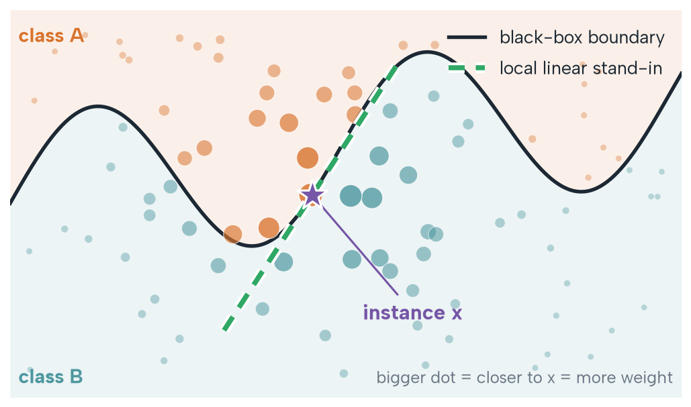
- Perturb the patient: create many similar ones
- Ask the black box about each of them
- Fit a straight line near \(x\), giving more weight to closer patients: its slope is the explanation
Fast and intuitive — but sensitive to how you perturb, and it can be gamed.
Simulated two-feature example; method Ribeiro et al. (2016), fooling LIME Slack et al. (2020)
SHAP – SHapley Additive exPlanations
\(\displaystyle \phi_j =\)
\(\displaystyle \style{color:#2F6F76}{\underset{\substack{\text{every set } S \text{ of}\\ \text{the other features}}}{\underline{\vphantom{\frac{|S|!\,(|F|-|S|-1)!}{|F|!}\sum_{S \subseteq F\setminus\{j\}}\Big[\Big]}\sum_{S \subseteq F\setminus\{j\}}}}}\)
\(\displaystyle \style{color:#D9732E}{\underset{\substack{\text{share of orderings where}\\ S \text{ comes right before } j}}{\underline{\vphantom{\frac{|S|!\,(|F|-|S|-1)!}{|F|!}\sum_{S \subseteq F\setminus\{j\}}\Big[\Big]}\frac{|S|!\,(|F|-|S|-1)!}{|F|!}}}}\)
\(\displaystyle \style{color:#7656A6}{\underset{\substack{\text{how much adding } j\\ \text{moves the prediction}}}{\underline{\vphantom{\frac{|S|!\,(|F|-|S|-1)!}{|F|!}\sum_{S \subseteq F\setminus\{j\}}\Big[\Big]}\Big[f(S\cup\{j\}) - f(S)\Big]}}}\)
\(F\) = all features · \(S\) = a set of features without \(j\) · \(f(S)\) = prediction knowing only \(S\)
\(\phi_j\) is the average marginal contribution (i.e. the SHAP value) of feature \(j\) over all orderings
SHAP is additive
\(\displaystyle \style{color:#3E8E5A}{\underset{\substack{\text{prediction}\\ \text{for patient } x}}{\underline{\vphantom{\sum_j \phi_j}f(x)}}}\quad =\)
\(\displaystyle \quad \displaystyle \style{color:#6B7785}{\underset{\substack{\text{average}\\ \text{prediction}}}{\underline{\vphantom{\sum_j \phi_j}\mathbb{E}[f]}}}\)
\(\displaystyle \quad + \quad \displaystyle \style{color:#D9732E}{\underset{\substack{\text{sum of the}\\ \text{SHAP values}}}{\underline{\vphantom{\sum_j \phi_j}\sum_j \phi_j}}}\)
\(\mathbb{E}[f]\) = average of the model’s predictions over the background patients
The explanation adds up exactly to the prediction. Nothing is lost, nothing is invented.
Lundberg and Lee (2017)
SHAP: one patient
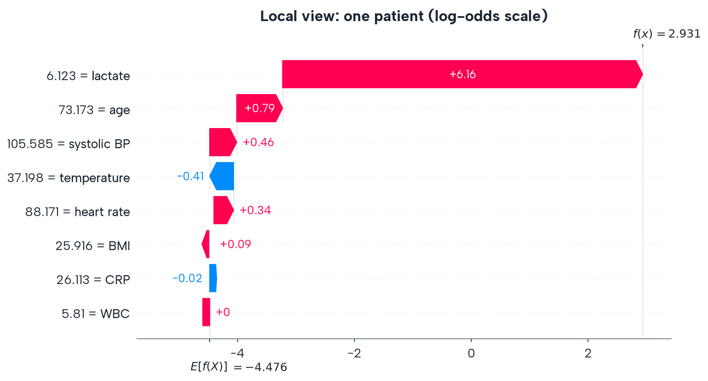
Simulated ‘sepsis’ data (3,000 patients), gradient boosting + TreeSHAP; the highest-risk test patient. Real-world: hypoxaemia during surgery Lundberg et al. (2018); ICU mortality in Denmark Thorsen-Meyer et al. (2020)
SHAP: the global view
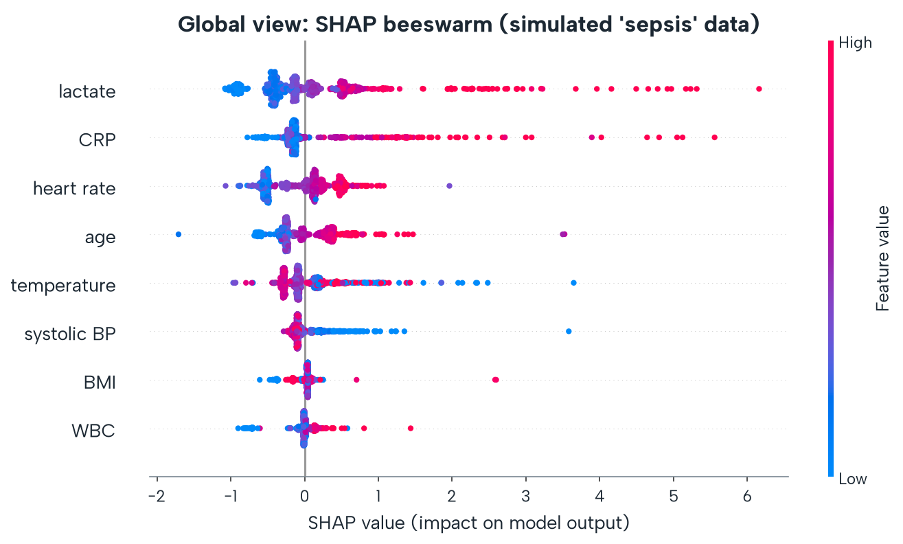
Same simulated data and model; each dot is one of the 900 test patients. Real-world: hypoxaemia during surgery Lundberg et al. (2018); ICU mortality in Denmark Thorsen-Meyer et al. (2020)
Integrated Gradients
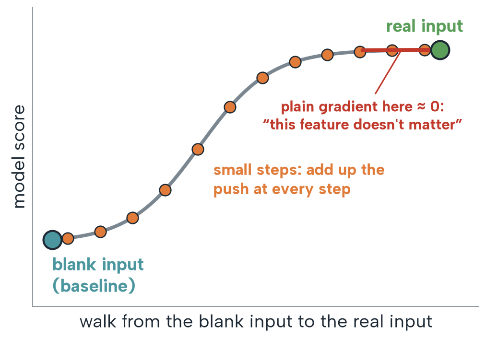
- Pick a blank baseline: a black image, or a shuffled DNA sequence
- Walk to the real input in small steps, asking the model at each step
- Add up how much each feature pushed the score along the way
Looks at the whole path, not just the end point — but the result depends on the baseline.
Simulated one-feature example; method Sundararajan et al. (2017); related: saliency Simonyan et al. (2014), DeepLIFT Shrikumar et al. (2017), LRP Bach et al. (2015)
Class activation maps: where does the CNN look?
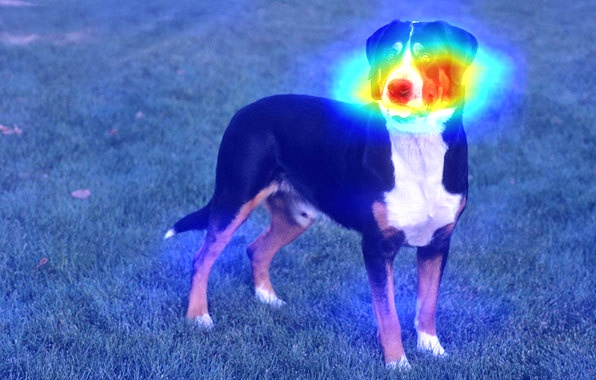
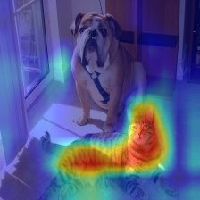
Grad-CAM: weight the last conv layer’s feature maps by the class gradient → coarse, class-specific heatmap
Zhou et al. (2016); Selvaraju et al. (2017); images: Glass Box Medicine (2019), as used in Kierczak (2025)
What is attention?
In a transformer, every residue decides whom to listen to when it updates itself.
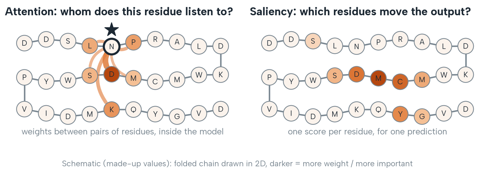
Attention
part of the computation: weights between pairs of residues
Saliency
computed afterwards from the output: one score per residue
Schematic (made-up values). Transformers: ESM-2, AlphaFold and others.
Beyond pixels
Concepts (TCAV)
“How much does striped drive zebra — or mitotic figure drive tumour?”
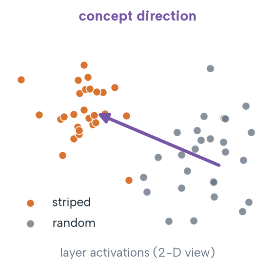
Counterfactuals
“The smallest change to \(x\) that flips the decision”
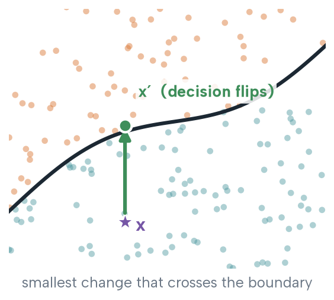
Kim et al. (2018); Wachter et al. (2018); DeGrave et al. (2021)
When nobody looked
Husky or wolf?
The model looked at the snow.
LIME showed it — and people shown the explanation stopped trusting the model.
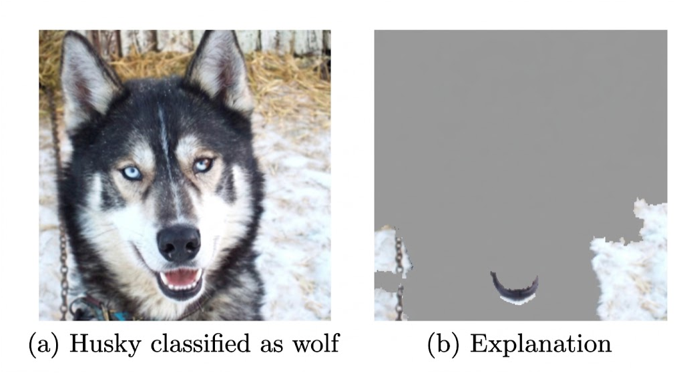
A deliberately planted shortcut to test explanations, Sec. 6.4 & Fig. 11 in Ribeiro et al. (2016)
CheXNet: leakage through patients
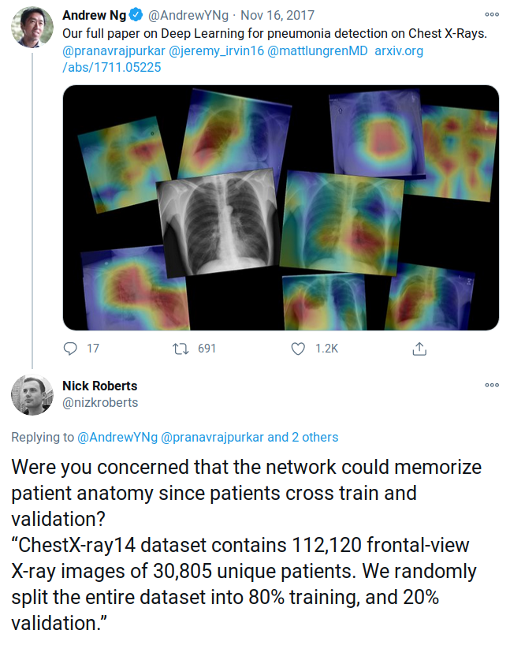
First version: images split randomly into train / validation
112,120 images, 30,805 patients → same patients on both sides
Revised version: no patient overlap
Rajpurkar et al. (2017) (arXiv v1 → v3); tweet screenshot as used in Kierczak (2025)
Pneumonia… or the hospital?
99.95% NIH radiographs assigned to the right hospital system by a CNN
0.93 → 0.82 AUC: internal test → external hospital
Prevalence differed by site → site predicts the label → the model learns the site.
22,050/22,062 NIH images; MSH+NIH model: internal AUC 0.931, Indiana 0.815. Zech et al. (2018). Photo: NIH Clinical Center (NIH, public domain, Wikimedia Commons)
COVID-19 from X-rays — with the lungs removed
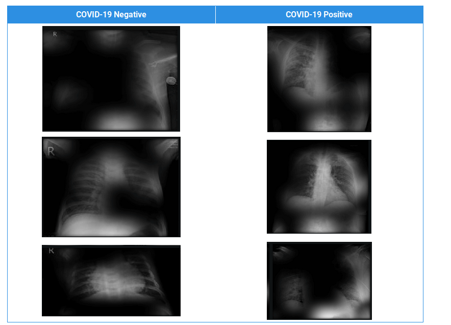
Black out the lungs…
…the classifier still “detects” COVID-19.
It learned which dataset an image came from.
The COVID gold rush
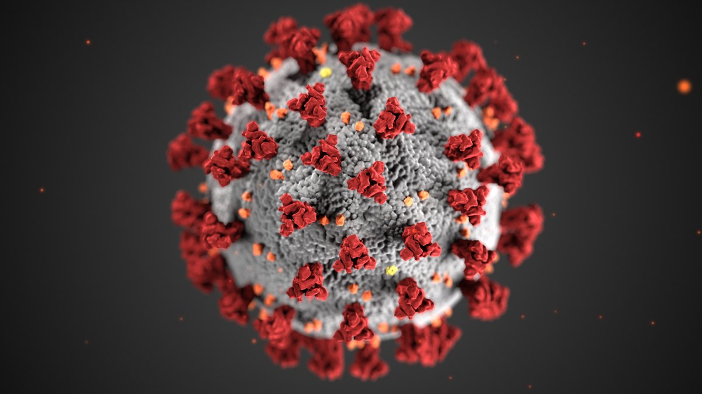
2,212 → 62 → 0 studies found → passed quality screening → of potential clinical use
Saliency + GAN counterfactuals: models used
- laterality markers & text
- patient positioning
- image borders, AP vs PA
Roberts et al. (2021); DeGrave et al. (2021) (both Nat Mach Intell 2021). Illustration: SARS-CoV-2, CDC (A. Eckert & D. Higgins, public domain)
“Asthma protects you from pneumonia”
In the hospital: what really happened
Asthma + pneumonia
= very high risk
→
Sent straight to the ICU
(intensive care)
→
They survive more often than other patients
In the data: what the model saw
Asthmatics have lower mortality
→
Model learns
asthma ⇒ lower risk
→
Would send them home — the patients who need care most
Why we know: an interpretable model (GA2M) showed the rule as one readable term — so clinicians could spot it and edit it out. A black box would have hidden it.
Caruana et al. (2015)
Wrong target: cost ≠ need
The goal: find the patients who need extra care
Need (how sick)
hard to measure
→
Proxy chosen:
future health-care cost
→
Algorithm flags the
highest predicted cost
The catch: same illness, different spending
Equally sick Black patients
→
Less money spent on them
→
Lower “risk” score — not flagged
17.7% → 46.5% share of Black patients flagged for extra care — today vs. if the bias is removed
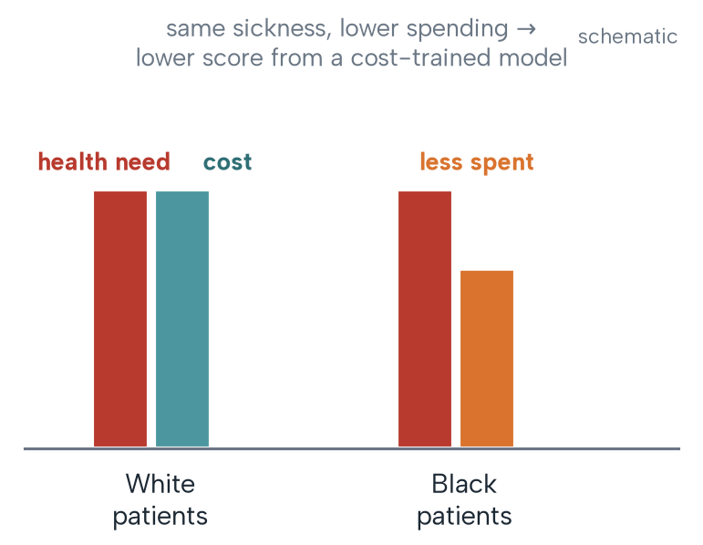
Obermeyer et al. (2019)
xAI doing biology
Reading regulatory grammar from DNA models
The explanation, not the prediction, is the scientific product.
Model predicts
TF binding from DNA
→
Explain it
(DeepLIFT + TF-MoDISco)
→ motifs
→
Motifs repeat every
~10.5 bp = one helical turn
→
CRISPR experiment
confirms it
Avsec, Weilert, et al. (2021); see also Avsec, Agarwal, et al. (2021); review: Novakovsky et al. (2023)
Inside protein language models
Protein sequence
goes into ESM-2
→
Activations
at each neuron mix many things
→
Sparse autoencoder
disentangles them
→
Thousands of features
each ≈ one thing
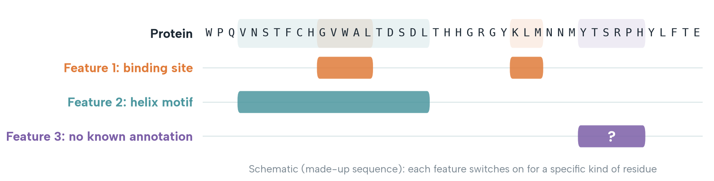
Binding sites, structural motifs, domains… and some features nobody has annotated yet.
Schematic figure. Simon and Zou (2025) (InterPLM, Nat Methods); Adams et al. (2025) (ICML)
A new antibiotic class, found with explanations
1. Train on ~39,000 compounds tested against MRSA
→
2. Screen ~12 million compounds never tested
→
3. Explain which part of each hit drives the prediction
→
4. Test: a new structural class, active in mouse infection models
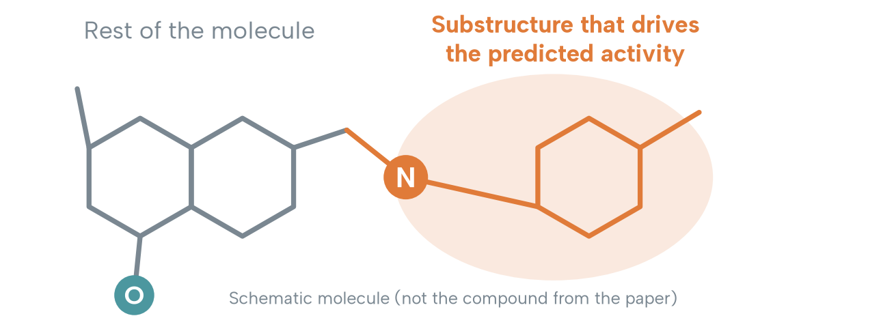
Chemists can design around a substructure — not around a neural-net weight.
Schematic molecule. Wong et al. (2024)
Can we trust the explanations?
Uncertainty: knowing when not to trust
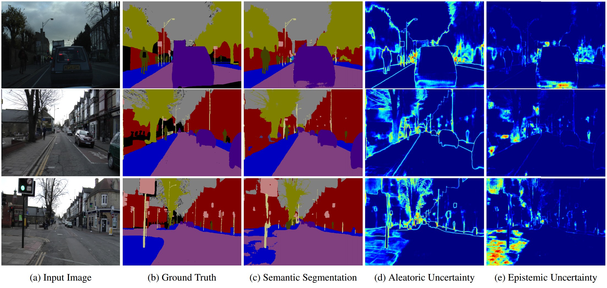
Input · truth · segmentation · aleatoric (object edges, far away) · epistemic (rare or unfamiliar objects)
Fig. 1 in Kendall and Gal (2017); as used in Kierczak (2019)
100% cat. 100% dog?
A cat/dog classifier must answer cat or dog.
What it should say: “I don’t know.”
Image as used in Kierczak (2019)
Uncertainty in the clinic
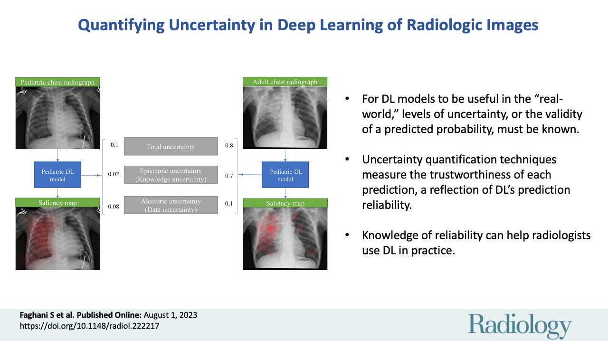
Visual abstract of Faghani et al. (2023) (Radiology); as used in Kierczak (2025)
Is 90% really 90%?
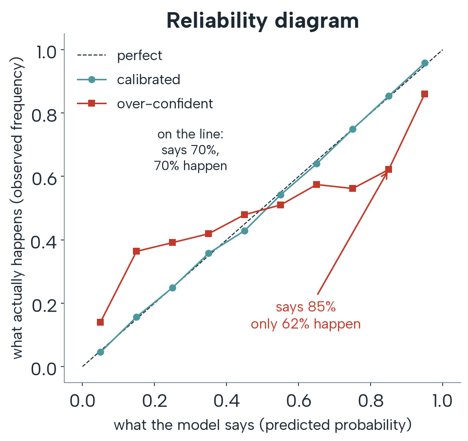
How to read a reliability diagram
- Group the predictions: all cases where the model said ~85%
- Check how often the event really happened in that group
- One dot per group. On the diagonal = honest probabilities. Below it = over-confident
Modern deep nets tend to be over-confident. Fix: temperature scaling on held-out data. Report a reliability diagram next to the AUC.
Guo et al. (2017); simulated data
Wrapping up
Regulation is coming
EU AI Act
- Art. 13 — transparency & information for deployers of high-risk systems
- Art. 86 — right to an explanation of individual decisions
Many medical AI systems are high-risk. → Ethics & Legal, next session

Regulation (EU) 2024/1689, European Parliament and Council of the European Union (2024). Flag of Europe: public domain, Wikimedia Commons
Pre-flight checklist
- Is the label what you actually care about? A proxy such as cost can stand in for need and be biased (Obermeyer 2019). An outcome under current treatment hides the untreated risk (asthma, Caruana 2015).
- Split by patient, not by image (CheXNet). Scanner, site, ink marks or text burned into the image can predict the label (Zech 2018, Winkler 2019, COVID X-rays).
- A linear model, a small tree or a GAM. If it is nearly as good, you may not need a black box, and its rules can be read and tested (Rudin 2019; rule models of exon inclusion, Enroth 2012).
- Global: which features matter overall? Local: why this patient? Check subgroups too: an average AUC can hide a failing group (chest drain, Oakden-Rayner 2020).
- Randomise the model's weights: does the map change? If not, it shows the input, not the model (Adebayo 2018). Compare more than one method, because explanations can be fooled (Slack 2020).
- A new hospital, scanner, batch or population. Zech 2018: AUC 0.93 inside, 0.82 outside. A proprietary sepsis model reached only AUC 0.63 in external validation.
- Use a reliability diagram, ensembles or conformal prediction, and let the model abstain. AlphaFold's pLDDT and PAE are the model example: it says where not to trust it.
- A heatmap is not a proof. Test it with ablations or an experiment. Best case: BPNet's ~10.5 bp motif spacing, confirmed with CRISPR.
Tick them off as you go · hover for details
High accuracy can hide wrong reasons.
xAI is a debugging & discovery tool — not a certificate.
Explanations are models too: test them.
Know when to say “I don’t know.”
Further reading
- C. Molnar, Interpretable Machine Learning — https://christophm.github.io/interpretable-ml-book/
- Novakovsky et al. 2023, xAI for genetics (Novakovsky et al. 2023)
- Hüllermeier & Waegeman 2021, uncertainty (Hüllermeier and Waegeman 2021)
- Angelopoulos & Bates, conformal prediction (Angelopoulos and Bates 2021)
- Python:
shap·captum·interpret·tfmodisco-lite - R:
DALEX·iml
License
This work is licensed under a Creative Commons Attribution-NonCommercial-ShareAlike 4.0 International licence (CC BY-NC-SA 4.0).
You may share and adapt it for non-commercial purposes, with attribution and under the same licence.
Third-party images and figures are credited on each slide and keep their original licences.